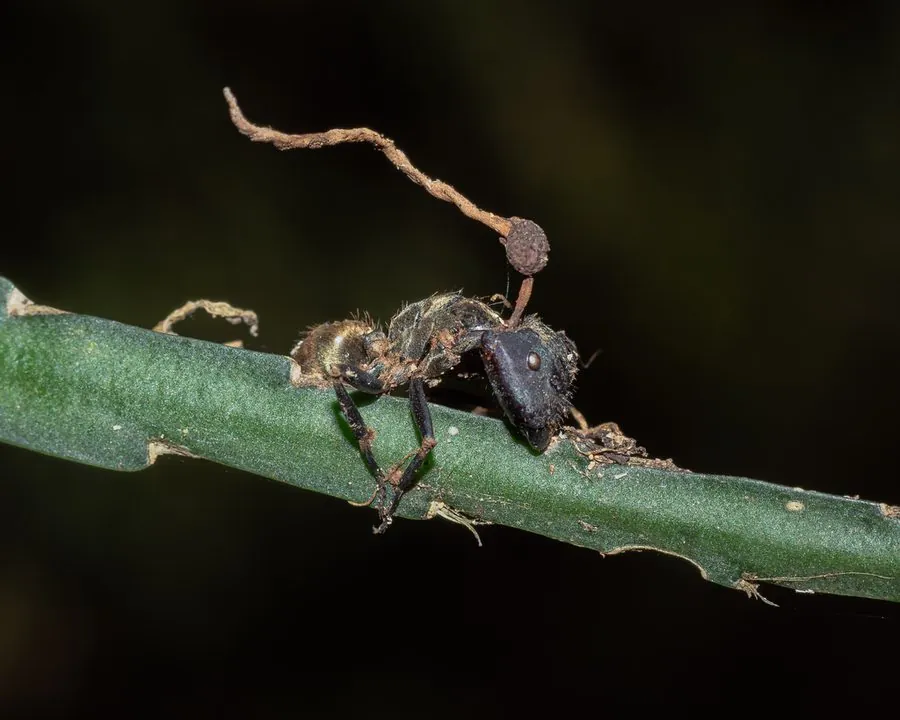

真菌 · 真菌界
蚁虫草 Ophiocordyceps unilateralis

虫生真菌，专性侵染木工蚁，操控宿主爬上叶片咬住叶脉而死，子实体自头部长出，是著名的“僵尸真菌”。
- 分类
- 门子囊菌门纲粪壳菌纲目肉座菌目科线虫草科属蛇虫草属
- 栖息环境
- 热带雨林林下，专性寄生于木工蚁，湿度高时发生
- 地理分布
- 热带雨林分布，泰国、巴西、非洲等地有记录，中国热带地区有近缘种
- 保护级别
- 暂无评估；依赖完整雨林生态与宿主种群
物种志
蚁虫草的菌丝在蚂蚁体内生长，感染后期形成子座。子座自蚂蚁头部或胸部伸出，细长，长 3–10 厘米，褐色至黑色，顶端膨大形成子囊壳，内含子囊与线状子囊孢子。无性阶段产生分生孢子。
蚁虫草主要侵染热带雨林中的木工蚁。感染后蚂蚁行为被改变：它离开蚁群，爬到离地约 25 厘米、温度湿度适宜的叶片背面，咬住主叶脉固定自身，随后死亡。菌丝在虫体内继续生长，数周后子座从头部伸出，释放孢子感染路过的新宿主。这种“行为操控”是寄生真菌研究的热点，也启发了影视与游戏中的“僵尸真菌”形象。它对人不致病，但采集与接触野生标本后应洗手。
形态与习性
- 宿主木工蚁等蚁类，专性寄生
- 子座自蚁头部长出，细长 3–10 厘米，褐色
- 孢子子囊孢子线状，无性阶段产分生孢子
- 生境热带雨林林下，高湿环境
- 行为操控驱使蚂蚁爬至 25 厘米高叶片咬住叶脉
- 安全性不感染人，接触标本后应洗手
趣味知识
- 被感染的蚂蚁会离开蚁群，爬到离地约 25 厘米的叶片背面咬住叶脉，直到死亡。
- 这个高度恰好是温度与湿度最适合真菌产孢的“死亡区间”。
- 子座从蚂蚁头部长出，数周后释放孢子，感染下一批路过的蚂蚁。
- 它不感染人类，但“僵尸真菌”的名号让它成为科普与影视的常客。